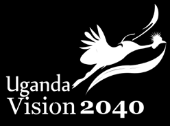
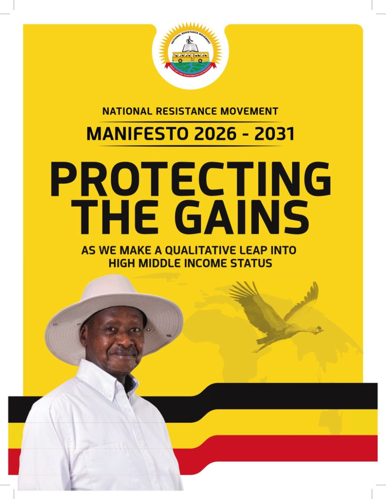

Local vision. National direction. Measurable delivery.
The Budadiri East vision is framed so that local priorities can connect to Uganda’s long-term vision, the current national development plan and the governing party’s 2026–2031 manifesto.
Download the frameworks.

Uganda Vision 2040
Long-term framework for transformation into a modern and prosperous country.
Download PDFFourth National Development Plan
2025/26–2029/30 national plan focused on incomes, jobs, productivity and sustainable transformation.
Download PDF
NRM Manifesto 2026–2031
“Protecting the Gains” and making a qualitative leap toward higher middle-income status.
Download PDFWhy the Budadiri pillars fit.
NDP IV prioritises production and value addition, human capital, private-sector growth and jobs, sustainable infrastructure, and stronger governance. It also emphasises implementation, follow-up, monitoring and accountability.
Verification layer.
These links are included so the public-facing site can distinguish sourced facts from future targets or office-provided updates.